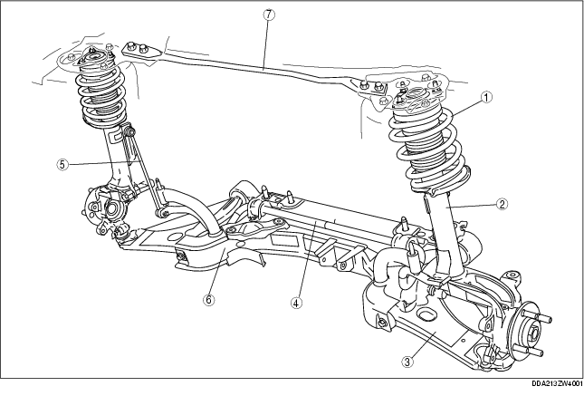

Front suspension location index  . 1 Front shock absorber and coil spring (See FRONT SHOCK ABSORBER AND SPRING REMOVAL/INSTALLATION) 2 Front shock absorber (See FRONT SHOCK ABSORBER INSPECTION) (See FRONT SHOCK ABSORBER DISPOSAL) 3 Front lower arm (See FRONT LOWER ARM REMOVAL/INSTALLATION) (See FRONT LOWER ARM INSPECTION) 4 Front stabilizer (See FRONT STABILIZER REMOVAL/INSTALLATION) 5 Stabilizer control link (See STABILIZER CONTROL LINK INSPECTION) 6 Front crossmember (See FRONT CROSSMEMBER REMOVAL/INSTALLATION) 7 Front suspension tower bar (See FRONT SUSPENSION TOWER BAR REMOVAL/INSTALLATION)